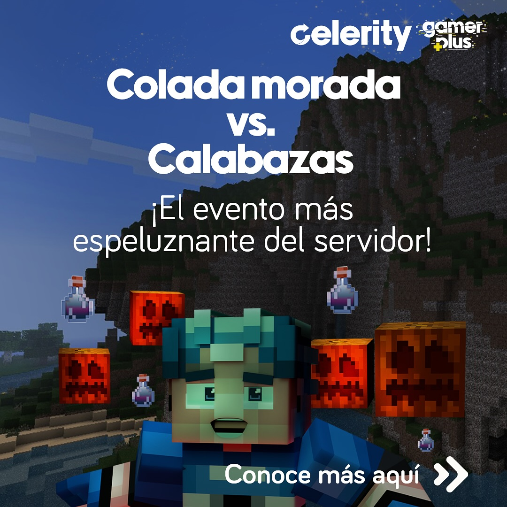
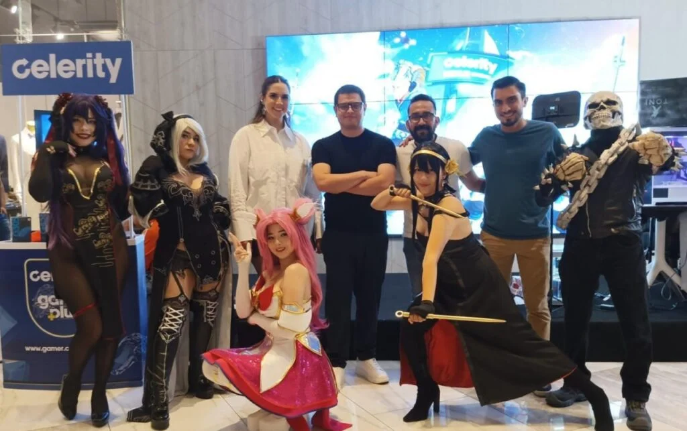
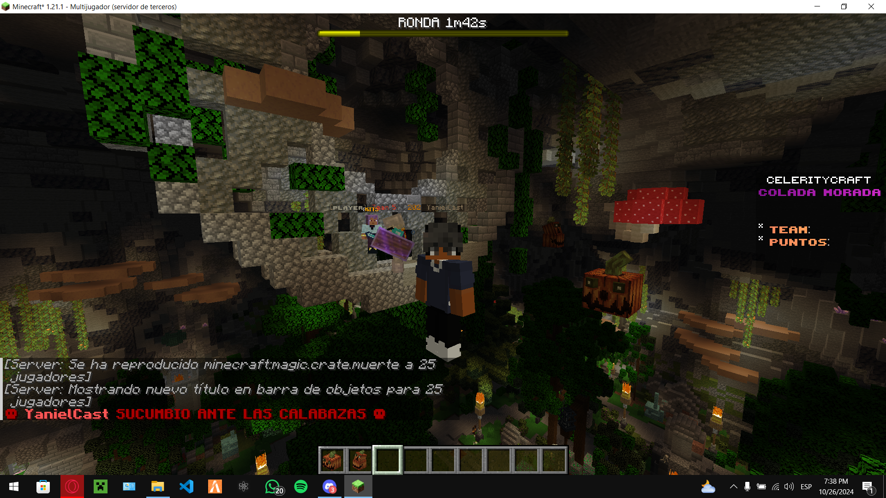
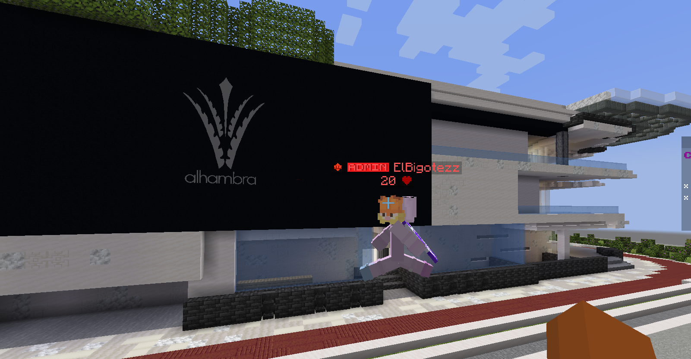
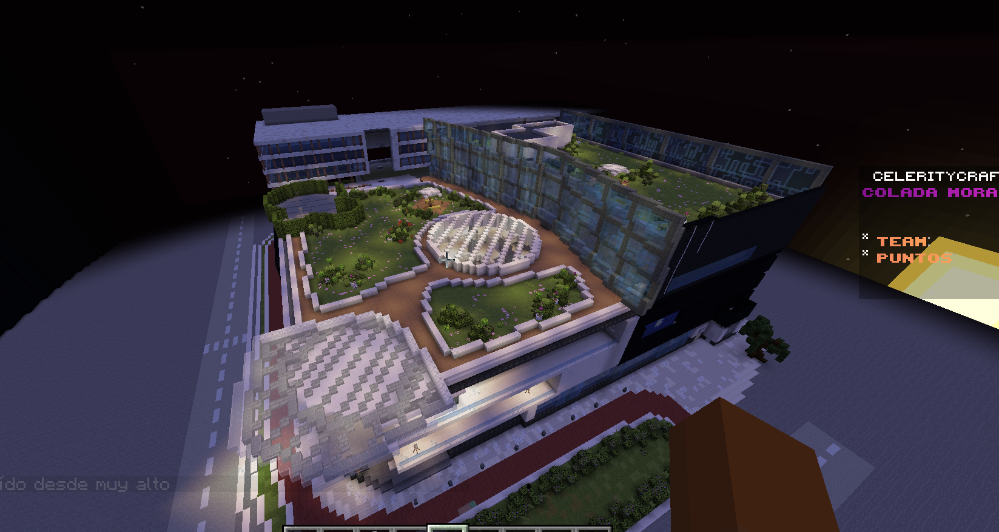
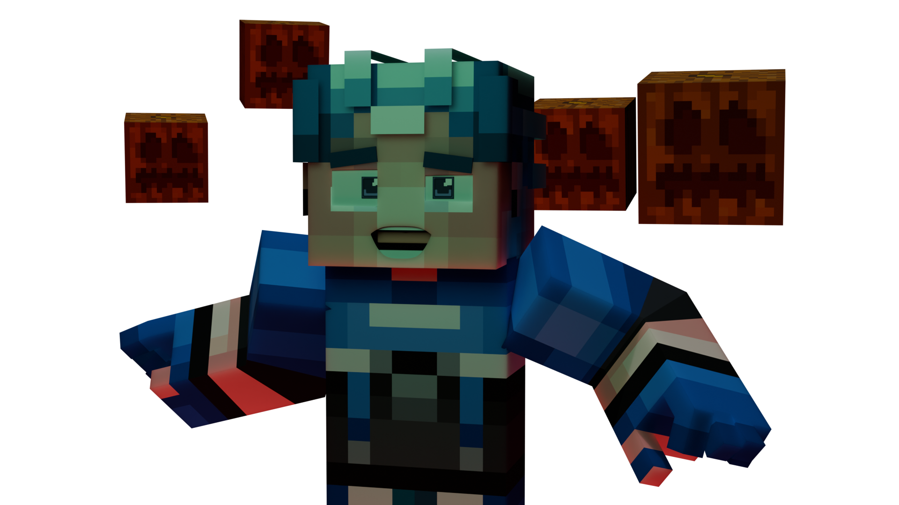

THE WORLD





How I fused Ecuadorian cultural tradition with competitive gaming — and built an entire shopping mall inside Minecraft.

After the initial success of the Celerity Craft server, most corporate teams would have checked the box, looked at the KPIs, and shut it down. But I saw an opportunity to keep the platform alive as a permanent extension of Celerity's gamer ecosystem — a virtual space where the community could hang out, play, and engage with the brand without ever feeling like they were being marketed to.
The strategy was simple: stop pushing traditional ads at a demographic that actively ignores them, and instead invite them into an experience they actually want to play.
Operating within our Agile cell team, WeAgile, I conceived the entire idea from scratch: a seasonal, hybrid event bridging two completely different cultural universes. We took Día de los Difuntos — Ecuador's traditional day of remembrance celebrated with the spiced berry drink Colada Morada — and fused it with the global gaming community's favourite seasonal aesthetic, Halloween.
Because we operated in a structured Agile environment, bringing a highly non-traditional gaming concept to life required clear navigation through corporate channels. I first presented the full end-to-end concept to our Product Owner, Alexandra Calle. With her alignment, we moved the project to one of our monthly cross-functional meetings, where I pitched the activation directly to our sponsor and the CEO of Puntonet, Katherine Miño, securing a definitive green light and full creative backing.
From there, it was time to build a massive bridge between the digital world and physical retail:
Executing a hybrid digital event relies heavily on stable infrastructure, but our timeline unfortunately coincided with severe, rolling nationwide energy shutdowns across Ecuador. These blackouts directly limited player connectivity and presented a major hurdle for our overall reach.
Despite the grid issues restricting how many people could get online at any given time, the concept resonated strongly enough with the community that we still managed a highly successful turnout both on the server and at the physical venue.




